نبذة عن الأستاذ محمد عثمان
تعرّف على الجوانب الإنسانية والعلمية والمهنية التي شكّلت مسيرة الراحل وأثره الطيب.
سيرة عطرة ومبادئ راسخة
عُرف الأستاذ محمد عثمان بحُسن الخلق والتواضع الشديد وحبه لنفع الآخرين. تميز بدماثة الخلق والرؤية الحكيمة في التعامل مع المواقف، وكان دائماً مرجعاً وسنداً لعائلته واحبابه وطلابه...لم يگن مجرد معلّم يلقي درساً ويمضي، بل گان للأجيال أباً قبل أن يگون معلماً، گان أباً حنوناً وصديقاً صدوقاً وسنداً لگل طالب التقى به وصاحب اثر لا يُمحي، عُرف بضميره اليقظ الذي لا يهدأ وهمّته العالية التي ألهمت الكثيرين وجدعنته الشديدة التي شهدت بها گل المواقف، گان يحتوي الصغير والگبير بطيبة قلبه ويمنح من روحه وصفاته الأخلاقية قبل العلمية، فصار صاحب فضل على بيوتٍ وأجيال گامله،إنه أرسى علماً وربّى أجيالاً وزرع خيراً في قلوب الناس.
عاش حريصاً على غرس القيم النبيلة والعمل، وتجسيد مفهوم "العمل الصالح الذي يمتد أثره". كان يُعرف بابتسامته الدائمة وحرصه على قضاء حوائج الناس دون انتظار مقابل..يطيب لنا أن نمثّل المسيرة المشرفة للأستاذ محمد عثمان
التحصيلات خلال مسيرته
-
التحصيل المتخصص: بدء في بناء الحصيلة العلمية المتخصصة التي شكّلت دليله في ميدان العمل.
-
التطوير المستمر: حرصه المستمر على مواكبة كل جديد من خلال طريق اخره ترفيهية للطلاب مثل خروجات و يوم ترفيهي للطلاب ويوم تكريم للطلاب المتفوقه كان حريص علي اسعاد الطلاب من خلال الرحالات وللشباب دورة كرويهمسانده : كان مساند للجميع كان اهل لاهل العلم وصديقاً مخلصاً واباً حنون ومُعلم وفي ومخلص بذل جهد في سبيل تعليم طلابه .
المحطات المهنية والمسؤوليات القيادية
شغل الأستاذ محمد عثمان معلم خبير وموجه تربوي ومربي فاضل للمواد الفلسفية بالثانوية العامة. اثبت فيها كفاءة عالية وجهد وحرصاً شديداً على الدقة والأمانة وتطوير منظومة العمل.
مُعلمإدارة فرق العمل، غرس روح الفريق الواحد، وإلهام الكوادر الشابة للوصول إلى أعلى مستويات التميز..درس لكثير من الاجيال وقدم الكثر من العلم والنصائح للطلاب في مجاله تركت أثراً مستداماً.
مُعلم للمواد الفلسفيةمعلم خبير ومربي فاضل بخبرة تتجاوز 25 عاماً في تدريس المواد الفلسفية لمرحلة الثانوية العامة يمتلك مسيرة مهنية حافلة بالعطاء والتنقل بين مدرسة العلياء والعديد من المراكز التعليمية الكبرى والسناتر التي نشر فيها علمه. نجح بـمسيرته العملية أن يجمع بين رصانة العلم ونبل الأخلاق، فكان لأبنائه الطلاب أباً رحيماً ومعلماً قديراً يتميز بأسلوب تربوي يجمع بين الكفاءة العلمية والاحتواء الأبوي، مما أكسبه قاعدة عريضة من محبة وثقة الطلاب وأولياء الأمور عبر الأجيال.ترك في نفس كل طالب أثراً لا يُمحى
سيرة متسلسلةمحطات في مسيرة الأستاذ محمد عثمان
خط زمني يوثق أبرز مراحل العطاء والإنجاز
بداية الرحلة والتأسيسالانطلاقة والتأهيل العلمي المتخصص
إتمام الدراسة والتخرج بتفوق، ثم البدء في بناء المسار المهني بالالتحاق بفرق العمل المتخصصة وإرساء قواعد النجاح القائمة على الأمانة والإتقان.
مرحلة النمو والقيادةخريج
الأستاذ محمد عثمان// خبير المواد الفلسفية والمربي الفاضل.خريج ليسانس تربية من جامعة عين شمس عام 1996.
التكريم والأثر الخالدتخليدالذكرى الطيبة
انتقال الجسد إلى جوار ربه، وبقاء الذكر الصالح والأثر الطيب والدعوات الصادقة متصلة من المحبين والطلاب والأصدقاء.
الذكريات المصورةمعرض الذكريات والوسائط
صور وثائقية ومحطات مصورة من حياة الأستاذ محمد عثمان
١صور فقيدنا الأستاذ محمد عثمان
صور رسمية وشخصية للراحل رحمه الله
1تكبير الصورةلقطة رسمية للفقيد2تكبير الصورةلقطة شخصية للفقيد3تكبير الصورةذكريات طيبة4تكبير الصورةلقطة شخصية للفقيد5تكبير الصورةلقطة شخصية للفقيد6تكبير الصورةلقطة رسمية للفقيد7تكبير الصورةلقطة شخصية للفقيد8تكبير الصورةأثر لا يزول9تكبير الصورةرحلة إيمانية10تكبير الصورةلوحة تذكارية للفقيد11تكبير الصورةلقطة شخصية للفقيد في المطار12تكبير الصورةلقطة شخصية للفقيد على الشاطئ13تكبير الصورةلقطة شخصية للفقيد14تكبير الصورةلقطة للفقيد أثناء إلقاء كلمة15تكبير الصورةمجموعة صور متنوعة للفقيد16تكبير الصورةلقطة شخصية للفقيد17تكبير الصورةلقطة شخصية للفقيد18تكبير الصورةلقطة شخصية للفقيد19تكبير الصورةلحظة هدوء وصفاء20تكبير الصورةلحظة رياضية مع الأحباب21تكبير الصورةصورة تذكارية للفقيد رحمه الله22تكبير الصورةلقطة شخصية للفقيد23تكبير الصورةلقطة شخصية للفقيد24تكبير الصورةلقطة شخصية للفقيد25تكبير الصورةلقطة شخصية للفقيد26تكبير الصورةنزهة في الحديقة27تكبير الصورةأمام مبنى وزارة التربية والتعليم28تكبير الصورةلقطة شخصية للفقيد29تكبير الصورةلقطة شخصية للفقيد30تكبير الصورةلحظة مميزة في الطبيعة٢صور شهادة وتكريم
لحظات تكريم وتفوق شارك فيها الراحل رحمه الله
1 1تكبير الصورةمع المحبين والطلاب2 2تكبير الصورةمع المحبين والطلاب3 3تكبير الصورةمع المحبين والطلاب4 4تكبير الصورةمع المحبين والطلاب56تكبير الصورةمع المحبين والطلاب6فيديو تكريم٣صور الأحباب والطلاب
ذكريات تجمعه بمن أحبهم وأحبوه من الأهل والأصدقاء والطلاب
1 1تكبير الصورةمع المحبين والطلاب2 2تكبير الصورةمع المحبين والطلاب3 3تكبير الصورةمع المحبين والطلاب4 4تكبير الصورةمع المحبين والطلاب5 5تكبير الصورةمع المحبين والطلاب6 6تكبير الصورةمع المحبين والطلاب7 7تكبير الصورةمع المحبين والطلاب8 8تكبير الصورةمع المحبين والطلاب9 9تكبير الصورةمع المحبين والطلاب10 10تكبير الصورةمع المحبين والطلاب11 11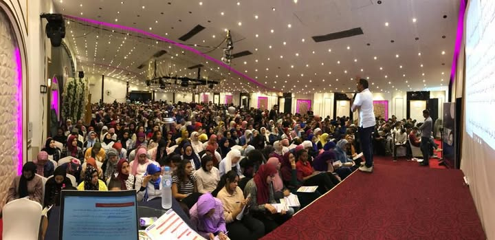
تكبير الصورةمع المحبين والطلاب12 12تكبير الصورةمع المحبين والطلاب13 13تكبير الصورةمع المحبين والطلاب14 14تكبير الصورةمع المحبين والطلاب15 15تكبير الصورةمع المحبين والطلاب16 16تكبير الصورةمع المحبين والطلاب17 17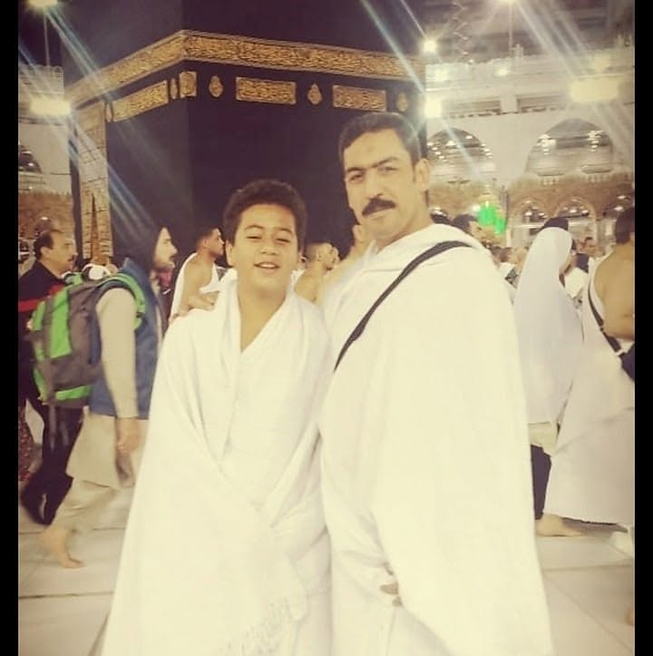
تكبير الصورةمع المحبين والطلاب18 18تكبير الصورةمع المحبين والطلاب19 19تكبير الصورةمع المحبين والطلاب20 20تكبير الصورةمع المحبين والطلاب21 21تكبير الصورةمع المحبين والطلاب22 22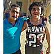
تكبير الصورةمع المحبين والطلاب23 23تكبير الصورةمع المحبين والطلاب24 24تكبير الصورةمع المحبين والطلاب25 25تكبير الصورةمع المحبين والطلاب26 26تكبير الصورةمع المحبين والطلاب27 27تكبير الصورةمع المحبين والطلاب28 28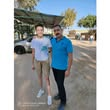
تكبير الصورةمع المحبين والطلاب29 29تكبير الصورةمع المحبين والطلاب30 30تكبير الصورةمع المحبين والطلاب31 31تكبير الصورةمع المحبين والطلاب32 32تكبير الصورةمع المحبين والطلاب33 33تكبير الصورةمع المحبين والطلاب34 34تكبير الصورةمع المحبين والطلاب35 35تكبير الصورةمع المحبين والطلاب36 36تكبير الصورةمع المحبين والطلاب37 37تكبير الصورةمع المحبين والطلاب38 38تكبير الصورةمع المحبين والطلاب39 39تكبير الصورةمع المحبين والطلاب40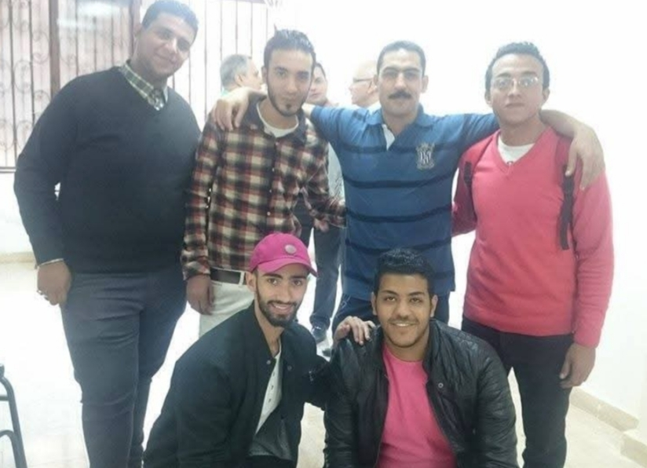
تكبير الصورةصورة جماعية مع الأحباب والطلاب41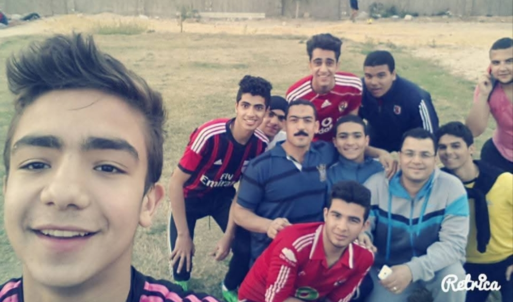
تكبير الصورةلقطة جماعية في الملعب مع الطلاب42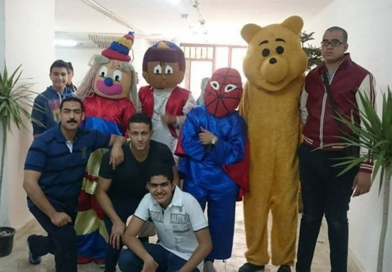
تكبير الصورةيوم ترفيهي مع الطلاب43تكبير الصورةرحلة جماعية إلى الشاطئ مع الطلاب44تكبير الصورةلقطة تذكارية مع أحد الزملاء45تكبير الصورةلحظة عائلية على الشاطئ46تكبير الصورةلقطة تذكارية على شاطئ البحر47تكبير الصورةصورة جماعية على شاطئ البحر48تكبير الصورةلقطة جماعية مع الأحباب على البحر49تكبير الصورةلحظات فرح وترفيه مع الطلاب50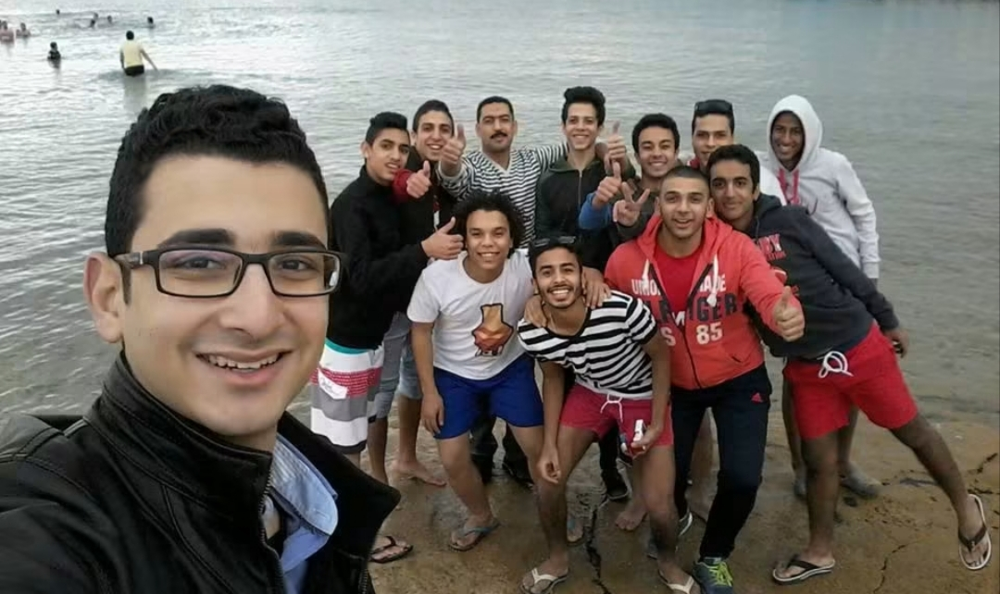
تكبير الصورةلقطة جماعية عند الشاطئ مع الطلاب51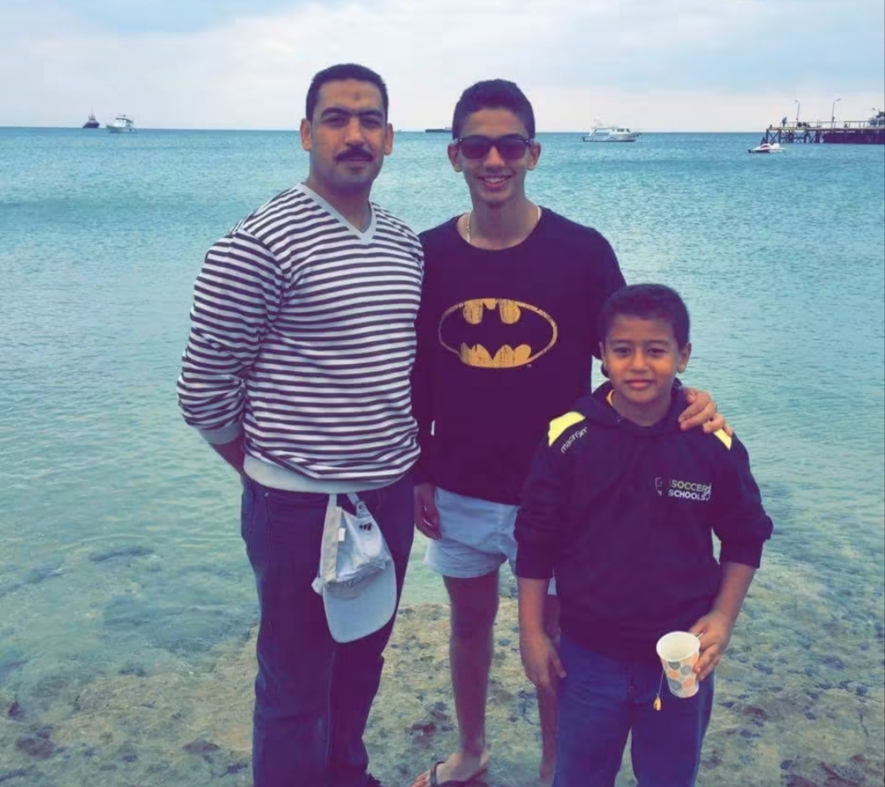
تكبير الصورةلحظة طيبة على شاطئ البحر52تكبير الصورةلقطة تذكارية في نزهة53تكبير الصورةلقطة جماعية على الشاطئ54تكبير الصورةلحظة مرحة في البحر مع الأحباب55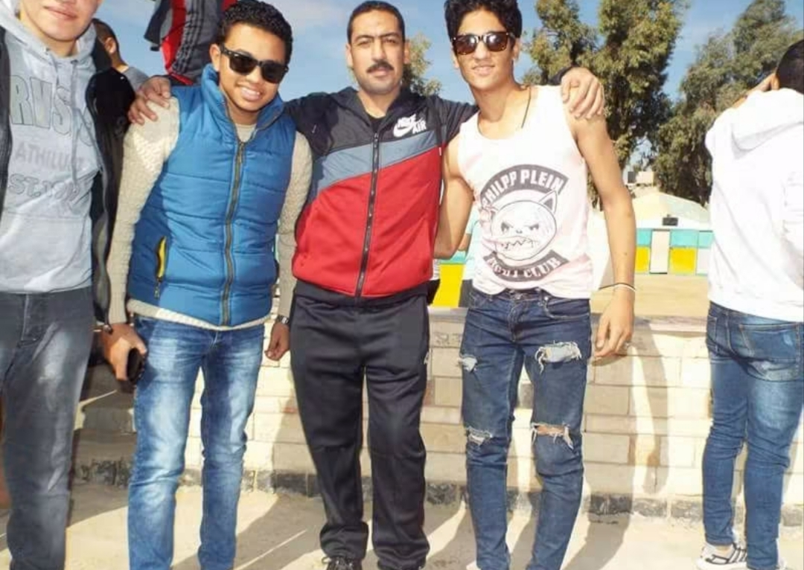
تكبير الصورةلقطة تذكارية مع الطلاب56تكبير الصورةلقطة تذكارية مع أحد الزملاء57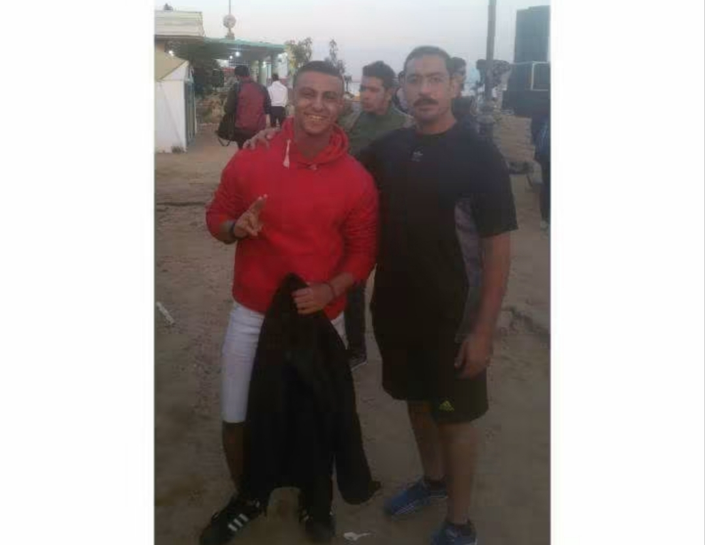
تكبير الصورةلقطة تذكارية مسائية58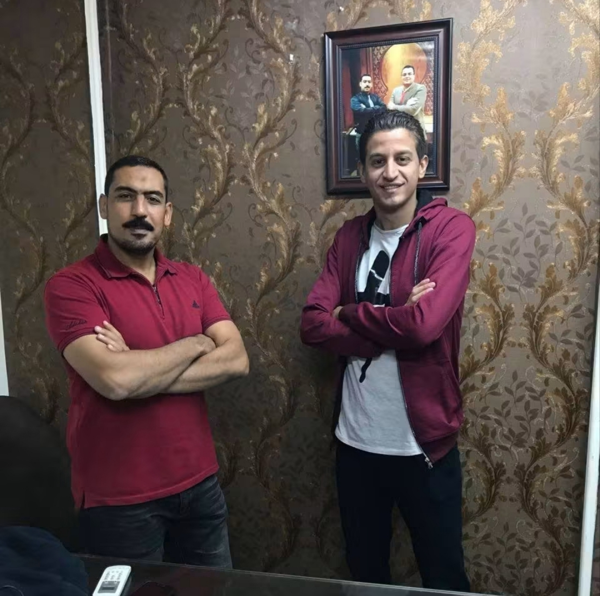
تكبير الصورةلقطة تذكارية مع أحد الزملاء59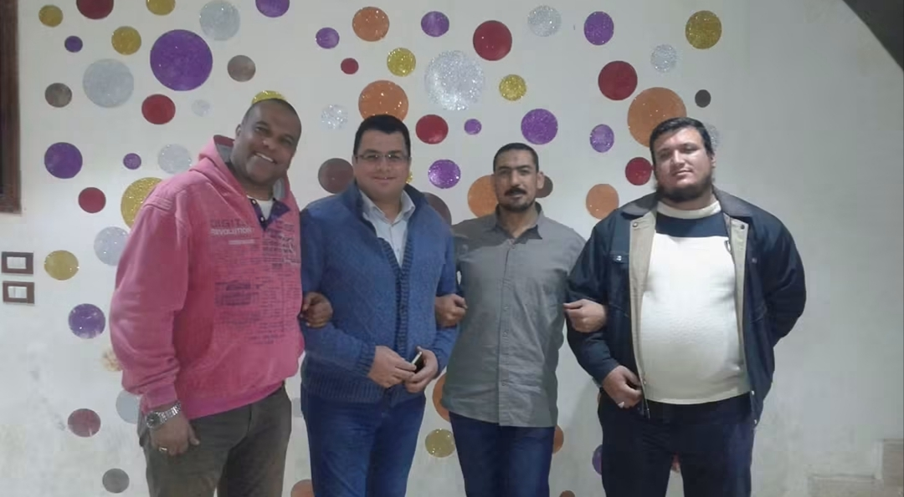
تكبير الصورةصورة جماعية مع الأصدقاءالذكريات المتحركةلحظات فقدنا
مقاطع فيديو توثّق لحظات ومواقف من حياة الأستاذ محمد عثمان، رحمه الله
123456789101112131415161718192021222324دفتر الخالديندفتر الذكريات والشهادات
كلمات وشهادات حية ممن عاصروا الأستاذ محمد عثمان وتعلموا منه
أضف شهادتك أو دعاءك
شارِكنا موقفاً مؤثراً أو كلمة طيبة في حق الراحل لتُحفظ في هذا الدفتر التذكاري.
تمت إضافة كلمتك بنجاح وتوثيقها في الدفتر التذكاري!2 رسائلشهادة وحق"كان الأستاذ محمد عثمان مثالاً للأخ الكبير والمعلم الحريص على مصلحة الجميع. لم يبخل يوماً بنصيحة أو توجيه، وكان طرازاً فريداً في النبل والإخلاص في العمل."
ذكريات عطرةمم. محمود عبد السلام
زميل عملدعاء وترحم"تعلمت منه كيف أتعامل مع التحديات الصعبة بمهنية وهدوء وأخلاق رفيعة. رحمة الله عليه وغفرانه، وسيظل أثره حاضراً معنا دائماً في كل خطوة."
ذكريات عطرةهـهاني الشاروني
أحد الذين تتلمذوا على يديهالأثر المستمرباب الدعاء والصدقة الجارية
قال رسول الله ﷺ: «إِذَا مَاتَ الإِنْسَانُ انْقَطَعَ عَنْهُ عَمَلُهُ إِلاَّ مِنْ ثَلاَثٍ: إِلاَّ مِنْ صَدَقَةٍ جَارِيَةٍ، أَوْ عِلْمٍ يُنْتَفَعُ بِهِ، أَوْ وَلَدٍ صَالِحٍ يَدْعُو لَهُ»
﴿ رَبَّنَا اغْفِرْ لِي وَلِوَالِدَيَّ وَلِلْمُؤْمِنِينَ يَوْمَ يَقُومُ الْحِسَابُ ﴾
اللهم اجعل قبر الأستاذ محمد عثمان روضة من رياض الجنة ونوراً وضياءً
دعاء مأثور للميت"اللَّهُمَّ اغْفِرْ لَهُ وَارْحَمْهُ، وَعَافِهِ وَاعْفُ عَنْهُ، وَأَكْرِمْ نُزُلَهُ، وَوَسِّعْ مُدْخَلَهُ، وَاغْسِلْهُ بِالْمَاءِ وَالثَّلْجِ وَالْبَرَدِ، وَنَقِّهِ مِنَ الْخَطَايَا كَمَا نَقَّيْتَ الثَّوْبَ الأَبْيَضَ مِنَ الدَّنَسِ."
إهداء دعوة وقراءة الفاتحة على روح الفقيدإجمالي الدعوات المهدات عبر الموقع: ...تأملوها
لا تنسوا معلمنا الغالي من صالح دعواتكم، ولا تنسوا أن تفعلوا الخيرات أينما كنتم.
تم الإجراء بنجاح